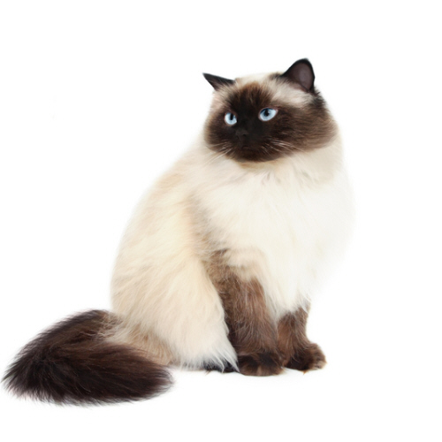

KOT HIMALAJSKI
|

KOT HIMALAJSKI |
| Wygląd | Turecka angora jest kotem średniej wielkości, o wydłużonej, smukłej, eleganckiej sylwetce; waży od 2,5 do 5 kg. Głowa angory ma kształt trójkątny, czaszka jest dość płaska, broda zaokrąglona - jej koniec tworzy z nosem linię prostą. Nos długi, prosty, ze słabo zaznaczonym przełomem. |
|---|---|
| Charakter | Turecka angora to kot o dużym temperamencie, wesoły, żywiołowy, energiczny. Porusza się z typową dla siebie gracją i elegancją. Ma miłe usposobienie, jest psotny, wścibski, ciekawski i zawsze chętny do zabawy. |